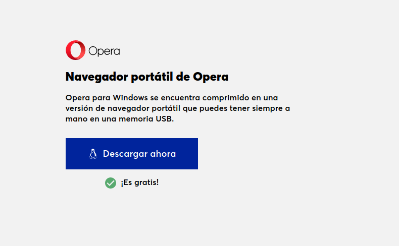
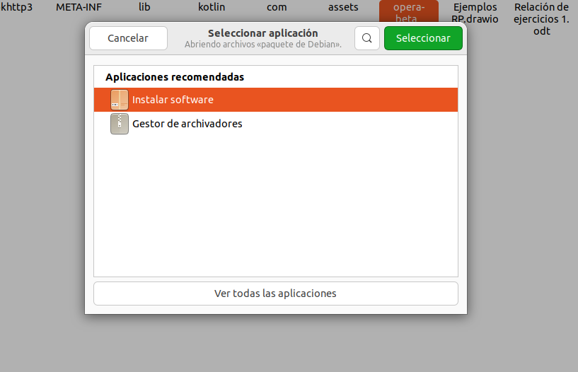
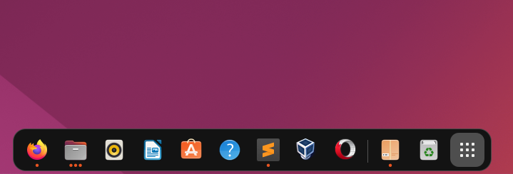

1ª Descargamos el
opera portable desde
la web oficial

2ª Se nos descargara
un paquete que al ejecutarlo
con el instalador de software de linux
empezará la instalación

3ª El ejecutable que tenemos
nos servirá
para empezar a usar
el navegador sin necesidad de instalar nada